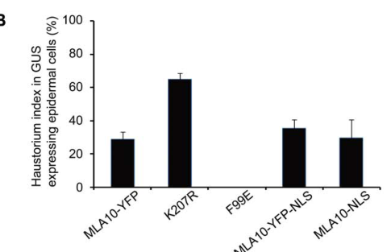

MLA10 is one of the many allelic intracellular immune receptors encoded at the barley Mildew locus a (Mla). It is a 951-residue coiled-coil, nucleotide-binding (NB-ARC), leucine-rich repeat protein (CC-NLR) that confers isolate-specific resistance to the powdery mildew fungus Blumeria graminis f. sp. hordei (Blumeria hordei) carrying the matching avirulence effector AVRA10, a small secreted protein with a predicted RNase-like fold encoded by the CSEP0141 locus. MLA10 associates with AVRA10 in yeast and in plant extracts, consistent with direct effector recognition, and the C-terminal LRR region largely determines its specificity for AVRA10 over the allelic effector AVRA22 recognised by MLA22. The NB-ARC domain acts as a nucleotide-dependent switch: the P-loop (K207R) mutation inactivates the receptor, whereas MHD-motif substitutions (e.g. D502V) make it autoactive. The N-terminal CC domain self-associates and is sufficient to trigger cell death. MLA10 is distributed between the cytoplasm and the nucleus. A nuclear pool is required and sufficient for resistance; there, after AVRA10 recognition, MLA10 associates with WRKY1/WRKY2 transcriptional repressors of basal defence and, via its CC domain, releases the MYB6 transcriptional activator from WRKY1 repression, linking effector recognition to defence gene reprogramming. The cytoplasmic pool drives a separable hypersensitive cell-death output that requires SGT1.
| GO Term | Evidence | Action | Reason |
|---|---|---|---|
|
GO:0002758
innate immune response-activating signaling pathway
|
IEA
GO_REF:0000117 |
ACCEPT |
Summary: ARBA machine-learning transfer to a CC-NLR. MLA10 is the receptor that starts this pathway: recognition of AVRA10 activates MLA10 [PMID:30777147, PMID:33534797], which in the nucleus associates with WRKY repressors and releases MYB6-dependent defence gene expression [PMID:17185563, PMID:23532068].
Reason: The term describes a signalling pathway initiated by a ligand engaging its receptor and leading to activation of innate immunity. MLA10 does the receptor step itself (effector recognition) and its CC domain directly engages the downstream WRKY1/MYB6 transcriptional module, so the gene product executes steps of this pathway rather than merely being required for it. This is the best existing process term for the core signalling role.
Supporting Evidence:
PMID:17185563
Recognition of the fungal avirulence A10 effector by MLA10 induces nuclear associations between receptor and WRKY transcription factors.
PMID:23532068
The activated form of full-length MLA10 receptor is needed to release MYB6 activator from WRKY1 repression and to stimulate MYB6-dependent gene expression.
PMID:30777147
co-expression experiments with matching Mla-AVRa pairs indicate direct detection of the sequence-unrelated fungal effectors by MLA receptors.
|
|
GO:0006952
defense response
|
IEA
GO_REF:0000002 |
MODIFY |
Summary: InterPro2GO mapping from the plant disease-resistance protein family (IPR044974). Correct but very general: the defence that MLA10 mediates is isolate-specific resistance to the powdery mildew fungus Blumeria graminis f. sp. hordei carrying AVRA10 [PMID:22685408, PMID:30777147].
Reason: MLA10 is an immune receptor whose only documented biological target is a fungus; nuclear-localised MLA10 is sufficient to restrict haustorium formation by an AVRA10-carrying Bgh isolate in barley epidermal cells. As the receptor that initiates this response, MLA10 participates in the defence process, so the more specific "defense response to fungus" (GO:0050832) is appropriate.
Proposed replacements:
defense response to fungus
Supporting Evidence:
PMID:22685408
nuclear localized MLA10 is sufficient to mediate disease resistance against powdery mildew fungus.
PMID:22685408
As expected the MLA10-YFP fusion conferred resistance against Bgh infection, resulting in an haustorium index around 29%, similar to our previous study [44]. The K207R P-loop mutation reduced MLA10 resistance activity as indicated by a haustorium index as high as 65%.
|
|
GO:0009626
plant-type hypersensitive response
|
IEA
GO_REF:0000117 |
KEEP AS NON CORE |
Summary: ARBA transfer. MLA10 does trigger cell death: the CC domain alone is sufficient to induce cell death, matching MLA10-AVRA10 pairs trigger cell death in barley protoplasts and N. benthamiana, and cytoplasmic MLA10 drives this output [PMID:21402358, PMID:22685408, PMID:30777147]. However, cell death and resistance are separable: nuclear-targeted MLA10 confers resistance without inducing cell death, and the CC L18E variant reduces cell death while retaining resistance [PMID:22685408].
Reason: The hypersensitive cell death is a genuine, receptor-executed output (the MLA10 CC domain is the minimal cell-death-triggering module, and its activity requires SGT1), so the annotation is correct. It is kept as non-core because the experimental work on MLA10 shows that disease resistance against powdery mildew is compartment-dependent and can be uncoupled from cell death, so cell death is not the core resistance mechanism of this receptor.
Supporting Evidence:
PMID:22685408
Remarkably, manipulation of cytoplasmic or nuclear MLA10 levels reveals that the cytoplasmic pool of MLA10 alone is sufficient to induce cell-death, whereas nuclear-localized MLA10 is unable to induce cell-death, but is capable of conferring disease resistance.
PMID:21402358
MLA CC mutants that fail to self-interact impair in planta cell death activity triggered by the CC domain alone and by an autoactive full-length MLA receptor that mimics its ATP-bound state.
file:HORVU/MLA10/MLA10-deep-research-falcon.md
Importantly, cell death is not synonymous with the resistance readout: a CC-domain
|
|
GO:0042742
defense response to bacterium
|
IEA
GO_REF:0000117 |
REMOVE |
Summary: ARBA transfer, presumably learned from Arabidopsis CC-NLRs that recognise bacterial effectors (e.g. RPS2, RPM1). There is no evidence that MLA10, or any MLA allele, acts against bacteria; MLA10 recognises the fungal effector AVRA10, and MLA-family receptors are documented for fungal pathogens (powdery mildew, and for homologues, rusts and blast).
Reason: The pathogen specificity of an NLR is determined by the effector it recognises, which cannot be inferred from family membership. MLA10's recognised effector is a Blumeria protein and its documented immune output is resistance to powdery mildew. Transferring "defense response to bacterium" from bacterial-effector NLRs is a family-level over-propagation with no support for this receptor.
Supporting Evidence:
PMID:33534797
The Mildew locus a (Mla) NLR gene has been shown to confer resistance against diverse fungal pathogens in cereal crops.
PMID:30777147
We report here the isolation of Bgh AVRa7, AVRa9, AVRa10, and AVRa22, which encode small secreted proteins recognized by allelic MLA7, MLA9, MLA10, and MLA22 receptors, respectively.
|
|
GO:0043531
ADP binding
|
IEA
GO_REF:0000002 |
KEEP AS NON CORE |
Summary: InterPro2GO mapping from the NB-ARC domain (IPR002182). MLA10 has an intact NB-ARC whose nucleotide-binding P-loop is functionally essential (K207R inactivates the receptor) and whose MHD motif controls autoactivation (D502V, H501 variants), consistent with the ADP-bound resting / ATP-bound active switch of STAND NTPases [PMID:22685408, PMID:21402358]. Nucleotide binding has not been measured directly for MLA10.
Reason: The NB-ARC nucleotide switch is conserved and functionally validated for MLA10 by P-loop and MHD mutagenesis, so ADP binding (the resting state of the switch) is a reasonable domain-based inference and is retained. It is a regulatory property of the receptor rather than its core activity, which is effector recognition and immune signalling.
Supporting Evidence:
PMID:22685408
As controls we generated CC(F83E)-YFP and FL(K207R)-YFP fusions, the F83E and the P-loop K207R mutation rendering MLA10 inactive
PMID:21402358
an autoactive full-length MLA receptor that mimics its ATP-bound state
|
|
GO:0098542
defense response to other organism
|
IEA
GO_REF:0000118 |
MODIFY |
Summary: TreeGrafter transfer from a PANTHER disease-resistance (PTHR23155) node. Correct at the family level, but for MLA10 the target organism is known: the powdery mildew fungus carrying AVRA10 [PMID:22685408, PMID:30777147].
Reason: The family-level term is not wrong, but MLA10's experimentally established defence role is against a fungus, so the specific child "defense response to fungus" (GO:0050832) is the informative term for this receptor.
Proposed replacements:
defense response to fungus
Supporting Evidence:
PMID:22685408
nuclear localized MLA10 is sufficient to mediate disease resistance against powdery mildew fungus.
|
|
GO:0140376
innate immune receptor activity
|
IDA
PMID:30777147 Multiple pairs of allelic MLA immune receptor-powdery mildew... |
NEW |
Summary: MLA10 recognises the Blumeria effector AVRA10: matching MLA10-AVRA10 pairs trigger cell death in barley protoplasts and N. benthamiana, MLA10 and AVRA10 associate specifically in split-luciferase assays in plant extracts and in yeast two-hybrid assays [PMID:30777147], and the MLA10 LRR largely determines AVRA10 specificity [PMID:33534797]. Recognition then transmits a signal that initiates immune responses [PMID:17185563, PMID:23532068].
Reason: This is the molecular activity of MLA10 itself (receiving a pathogen-derived signal and transmitting it to initiate an innate immune response), and it is not represented in GOA, which carries only ADP binding as an MF. The comparator check supports this term: other plant NLRs that recognise pathogen effectors carry GO:0140376 by experimental evidence, including tomato I2, rice RGA5 and Arabidopsis RPP1, RPP4 and RPP13. "protein binding" is avoided in favour of this informative receptor term.
Supporting Evidence:
PMID:30777147
Consistent with a direct interaction of matching MLA and AVRA pairs, co-expression of BD-Mla10 with AD-AVRa10 in yeast resulted in leucine reporter gene activation and this was undetectable when Mla10 was replaced by either Mla7 or Mla22
PMID:30777147
Co-expression of AVRa10-nLUC with Mla10-cLUC resulted in the detection of a 3.5-fold higher LUC activity when compared to expression of its virulent variants AVRa10-V/AVRa22-V-nLUC and AVRa22-nLUC (Figure 5C).
PMID:33534797
the results suggest that the 58 amino acid differences between the LRRs of Mla10 and Mla22 are major determinants of respective recognition specificities for the allelic AVRA10 and AVRA22 effectors.
|
|
GO:0005634
nucleus
|
IDA
PMID:22685408 Structure-function analysis of barley NLR immune receptor ML... |
NEW |
Summary: Fluorescently tagged MLA10 is detected in the nucleus and cytoplasm of barley leaf epidermal cells; the nuclear pool is required for, and nuclear-targeted MLA10 is sufficient for, resistance, and MLA10 associates with WRKY and MYB6 transcription factors in the nucleus [PMID:17185563, PMID:22685408, PMID:23532068].
Reason: GOA has no cellular-component annotation for MLA10. Nuclear localisation is shown by imaging and is functionally relevant (the resistance output is nuclear).
Supporting Evidence:
PMID:22685408
We have previously shown that MLA10 locates to both the cytoplasm and the nucleus, and importantly, the nuclear pool is required for its disease resistance [44].
PMID:17185563
We show that in barley, intracellular mildew A (MLA) R proteins function in the nucleus to confer resistance against the powdery mildew fungus.
|
|
GO:0005737
cytoplasm
|
IDA
PMID:22685408 Structure-function analysis of barley NLR immune receptor ML... |
NEW |
Summary: MLA10 also resides in the cytoplasm, and enforced cytoplasmic retention or nuclear export enhances MLA10-triggered cell death [PMID:22685408].
Reason: Cytoplasmic localisation is shown by imaging and is functionally relevant to the cell-death output. The finer compartment (cytosol versus membrane association) is not resolved for MLA10, so the general term is used.
Supporting Evidence:
PMID:22685408
Enforced MLA10 subcellular localization, by tagging with a nuclear localization sequence (NLS) or a nuclear export sequence (NES), shows that MLA10 activity in cell death signaling is suppressed in the nucleus but enhanced in the cytoplasm.
|
Q: Where is MLA10 activated by AVRA10 in native infections, and is the nuclear resistance model for MLA10 compatible with the cytosolic resistance shown for the wheat homologues Sr33 and Sr50?
Q: Does activated MLA10 form a CC-NLR resistosome with Ca2+-permeable channel activity, as proposed for other CC-NLRs, and if so how does such an assembly relate to the nuclear WRKY/MYB6 signalling output?
Q: Given that both MLA10 and AVRA10 are known, should the recognition step be captured in GO-CAM as MLA10 innate immune receptor activity with AVRA10 as input, rather than through a generic binding term?
Experiment: Purify MLA10 (or an MLA10 LRR fragment) with AVRA10 and determine binding affinity and a cryo-EM structure of the complex, testing whether the MLA13-AVRA13 heterodimer architecture is conserved for MLA10.
Experiment: Measure nucleotide occupancy (ADP versus ATP) of wild-type, K207R and D502V MLA10 proteins, and test whether AVRA10 triggers oligomerisation and Ca2+ influx in plant cells.
Experiment: Use AVRA10-inducible, compartment-restricted MLA10 variants in stable barley lines to determine whether nuclear MLA10 activity is required for resistance under native infection, in comparison with cytosolic Sr33/Sr50.
The research report should be a detailed narrative explaining the function, biological processes, and localization of the gene product. Citations should be given for all claims.
You should prioritize authoritative reviews and primary scientific literature when conducting research. You can supplement
this with annotations you find in gene/protein databases, but these can be outdated or inaccurate.
We are specifically interested in the primary function of the gene - for enzymes, what reaction is catalyzed, and what is the substrate specificity? For transporters, what is the substrate? For structural proteins or adapters, what is the broader structural role? For signaling molecules, what is the role in the pathway.
We are interested in where in or outside the cell the gene product carries out its function.
We are also interested in the signaling or biochemical pathways in which the gene functions. We are less interested in broad pleiotropic effects, except where these elucidate the precise role.
Include evidence where possible. We are interested in both experimental evidence as well as inference from structure, evolution, or bioinformatic analysis. Precise studies should be prioritized over high-throughput, where available.
The supplied UniProt record identifies Q6WWJ4 as MLA10 from Hordeum vulgare (barley). Independent primary studies identify barley MLA10 as an intracellular coiled-coil–NB-ARC–leucine-rich-repeat (CC-NLR) immune receptor at Mildew locus a. This matches the supplied disease-resistance, NB-ARC, helical and LRR annotations; the publications examined did not independently print the accession Q6WWJ4. MLA10 must not be conflated with the distinct MLA22, MLA13 or MLA3 receptors. Its best-established function is isolate-specific recognition of AVRA10, an effector of the barley powdery mildew fungus Blumeria graminis f. sp. hordei (also called Blumeria hordei), followed by effector-triggered defense signaling. MLA10 is a receptor and signaling protein, not a demonstrated enzyme or transporter. (bauer2021theleucinerichrepeats pages 2-3, saur2019multiplepairsof pages 11-12, chang2013barleymlaimmune pages 1-2)
Its C-terminal LRR region is the principal experimentally mapped determinant of AVRA10 specificity; the central NB-ARC contains a functionally important nucleotide-binding P-loop, and the N-terminal CC domain participates in signaling and transcription-factor interactions. The P-loop mutant K207R impairs MLA10 activity, supporting a requirement for the nucleotide-binding machinery, but the cited work does not establish an MLA10-specific catalytic turnover rate or substrate specificity. Nor does an RNase-like effector fold make the MLA10 receptor an RNase. (bai2012structurefunctionanalysisof pages 6-8, bai2012structurefunctionanalysisof pages 1-2, bauer2021theleucinerichrepeats pages 13-16, bauer2021theleucinerichrepeats pages 9-11)
The experimentally supported pathway is fungal AVRA10 perception → MLA10 activation → defense-gene regulation and inhibition of fungal establishment, with a separable cell-death output. Saur and colleagues identified AVRA10 as an allele of the fungal candidate-secreted-effector gene CSEP0141. Matching MLA10–AVRA10 expression elicited cell death in Nicotiana benthamiana; corresponding barley-protoplast assays supported recognition, though their reporter effect was more modest. MLA22 instead responds to the related fungal allele AVRA22. Yeast interaction experiments, which contain no other plant proteins, and plant split-luciferase assays support a direct receptor–effector association; the MLA10–AVRA10 split-luciferase signal was approximately 3.5 times that of tested nonrecognized effector variants. These assays establish specificity and association, not a purified-protein binding constant or an atomic MLA10–AVRA10 structure. The earlier proposed elicitor EKA_AVRA10 did not reproduce MLA10-dependent cell death in Saur and colleagues’ tests, making the validated CSEP0141 effector the appropriate basis for this annotation. (saur2019multiplepairsof pages 11-12, saur2019multiplepairsof pages 17-18, saur2019multiplepairsof pages 12-13, saur2019multiplepairsof pages 13-15)
LRR-swap experiments provide stronger mechanistic resolution. Exchanging the LRRs between MLA10 and MLA22 largely transferred their respective AVRA10/AVRA22 recognition preferences; the LRR regions differ at 58 amino-acid positions. In barley protoplasts, the chimeras, not the wild-type receptors, reduced the cell-viability luciferase readout by approximately 80% for MLA10 carrying the MLA22 LRR with AVRA22 and 40% for MLA22 carrying the MLA10 LRR with AVRA10. Effector-swap experiments additionally implicated AVRA10 residues D53, H64, F77 and W96 in MLA10-specific recognition. AVRA10 was predicted to have an RNase-like structural scaffold, but experimental assays found no detectable RNase activity for the tested effector; the fold prediction should not be mistaken for enzymatic activity or for a solved MLA10–AVRA10 complex. (bauer2021theleucinerichrepeats pages 19-21, bauer2021theleucinerichrepeats pages 9-11, bauer2021theleucinerichrepeats pages 13-16)
Fluorescently tagged MLA10 occurs in both the cytoplasm and nucleus of plant cells; the studies place its relevant functions within barley leaf cells, particularly the epidermal cells challenged by powdery mildew, rather than in the extracellular space. Forced nuclear targeting retained resistance to an AVRA10-bearing fungus, while depletion of the nuclear pool compromised resistance. In one barley single-cell assay, the fungal haustorium index—the proportion of scored interactions in which the fungus established a haustorium—was approximately 29% with MLA10-YFP, 35% with nuclear-targeted MLA10-YFP-NLS, 30% with MLA10-NLS and 65% with the impaired K207R variant. A previously reported nuclear-export fusion had an index of approximately 52%, similar to its empty-vector control. These observations support a nuclear pool sufficient for MLA10-mediated resistance; they do not pinpoint the compartment in which native AVRA10 first activates MLA10. (bai2012structurefunctionanalysisof pages 8-9, bai2012structurefunctionanalysisof pages 11-13, bai2012structurefunctionanalysisof media 417b22a6)
By contrast, nuclear targeting suppressed MLA10-induced cell death, whereas nuclear export enhanced it in transient-expression experiments; cytoplasmic-retention experiments further supported a cytoplasmic death-signaling output. Thus the authors’ interpretation is compartment-dependent bifurcation: nuclear MLA10 promotes resistance signaling, whereas cytoplasmic MLA10 initiates or amplifies cell-death signaling. Importantly, cell death is not synonymous with the resistance readout: a CC-domain L18E substitution reduced death signaling while full-length MLA10-L18E retained resistance. These conclusions are supported by manipulated localization and mixed barley/Nicotiana assays; they should not be recast as direct imaging of the precise activation site in naturally infected barley. (bai2012structurefunctionanalysisof pages 11-13, bai2012structurefunctionanalysisof pages 8-9)
MLA10’s CC domain associates with barley WRKY1 and WRKY2 transcription factors and with MYB6. MYB6 promotes defense-associated gene expression, while WRKY1 can associate with MYB6 and oppose its DNA binding. Chang and colleagues found that the MLA10 CC region disrupts the WRKY1–MYB6 interaction; an autoactive full-length MLA10 D502V variant strongly stimulated a MYB6-responsive reporter even when WRKY1 was present. Their model is that activated nuclear MLA10 derepresses MYB6-dependent transcription, linking effector recognition to resistance. The biochemical interactions and reporter effects were tested, whereas the exact sequence of all these events during native AVRA10 infection remains a mechanistic interpretation. MYB6 silencing also impaired MLA-associated resistance, although that particular numerical infection experiment used MLA12, not MLA10. (chang2013barleymlaimmune pages 3-5, chang2013barleymlaimmune pages 8-9, chang2013barleymlaimmune pages 1-2)
MLA10 signaling also depends on receptor state and cellular support proteins. Full-length P-loop K207R and mutations in conserved CC/NB-ARC motifs impaired experimental responses, while MHD-region substitutions were used to create autoactive receptors. In a heterologous cell-death assay, silencing SGT1 eliminated MLA10-associated cell death, whereas silencing RAR1 did not; separately, RAR1 was reported necessary for MLA10 disease resistance. Those output- and assay-specific findings are more informative than asserting a universal RAR1 requirement for every MLA10 activity. Small-RNA regulation is likewise allele-specific: overexpressed barley miR9863 reduced MLA1-dependent resistance but did not detectably impair MLA10-dependent resistance or death under the tested conditions. In Mla10 barley, the haustorium index remained approximately 6–7% across the tested miR9863 constructs and control. (bai2012structurefunctionanalysisof pages 6-8, bai2012structurefunctionanalysisof pages 11-13, liu2014themir9863family pages 11-13)
The following table keeps the quantitative readouts and their experimental limits together. The plotted barley haustorium measurements were checked against the source figure; its nuclear-export value comes from an earlier experiment discussed in that paper, not from one of that figure’s plotted bars. (bai2012structurefunctionanalysisof pages 8-9, bai2012structurefunctionanalysisof media 417b22a6)
| Question | Strongest direct evidence | Important limit |
|---|---|---|
| Does MLA10 associate specifically with AVRA10? | 2019: AVRA10–MLA10 produced 3.5-fold higher split-luciferase activity than AVRA10-V/AVRA22-V or AVRA22 controls. Cognate association was also detected in yeast, where plant bridging proteins are absent. (saur2019multiplepairsof pages 12-13, saur2019multiplepairsof pages 13-15) | Split-LUC measures proximity or association rather than an equilibrium binding constant. Full-length proteins were not purified for an in-vitro binding assay. |
| Does the MLA10 LRR determine effector specificity? | 2021: MLA10 and MLA22 LRRs differ at 58 amino acids. In barley protoplasts, the chimeric receptors MLA10LRR22 with AVRA22 and MLA22LRR10 with AVRA10 reduced relative LUC activity by about 80% and 40%, respectively, consistent with transferred recognition specificity. (bauer2021theleucinerichrepeats pages 13-16) | These values concern LRR-swap chimeras, not wild-type MLA10 or MLA22. Reduced LUC is a proxy for cell death, not a direct fungal-growth measurement. |
| Where does MLA10 execute resistance and cell-death functions? | 2012: In barley single-cell Bgh assays, haustorium indices were approximately 29% for MLA10-YFP, 35% for MLA10-YFP-NLS, 30% for MLA10-NLS and 65% for the inactive P-loop mutant K207R. A prior experiment reported approximately 52% for nuclear-depleted MLA10-YFP-NES, similar to empty vector. Nuclear targeting retained resistance, whereas cytoplasmic enrichment enhanced cell death and nuclear targeting suppressed it. (bai2012structurefunctionanalysisof pages 8-9, bai2012structurefunctionanalysisof pages 11-13, bai2012structurefunctionanalysisof media 417b22a6) | NLS/NES tags and heterologous Nicotiana benthamiana cell-death assays may alter trafficking or activity. The evidence supports compartment-dependent output but does not establish where native MLA10 is first activated. |
| Does activated MLA10 regulate MYB6/WRKY1-dependent transcription? | 2013: Autoactive MLA10(D502V) increased the MYB6 reporter to approximately 28 units with MYB6 and approximately 24 units with MYB6 plus WRKY1, supporting relief of WRKY1 repression. The MLA10 CC domain also disrupted the WRKY1–MYB6 complex in interaction assays. (chang2013barleymlaimmune pages 3-5, chang2013barleymlaimmune pages 8-9) | D502V is an artificial autoactive MHD mutant, and reporter assays used heterologous protoplast systems. The values do not directly quantify endogenous barley transcription after AVRA10 recognition. |
| Is MLA10 attenuated by miR9863? | 2014: In Mla10 barley, MIR9863a/b/c left the Bgh haustorial index near the control at about 6–7%. By comparison, in Mla1 barley, MIR9863a or MIR9863b increased the index from less than 3% to approximately 22% or 15%, respectively. MLA10-triggered cell death was likewise unaffected. (liu2014themir9863family pages 11-13, liu2014themir9863family pages 1-2) | This demonstrates allele-specific non-targeting under the tested expression conditions, not that MLA10 lacks all post-transcriptional regulation or can never be affected by small RNAs. |
Table: Direct experimental evidence for barley MLA10 recognition, domain specificity, compartment-dependent signaling, transcriptional output, and miRNA regulation. Chimeric-receptor results are explicitly distinguished from wild-type MLA10.
The 2023–2024 literature reinforces the importance of distinguishing Mla alleles, rather than establishing a new MLA10-specific biochemical pathway. A 2023 study found that a virulent AVRA13 variant can bind MLA13 yet prevent its activation; a 2024 study established MLA3 recognition of the rice-blast effector Pwl2. Neither result demonstrates analogous AVRA10 interference or blast resistance for MLA10. Likewise, a 2021 transgenic study demonstrated wheat-stripe-rust resistance for MLA8, not MLA10. A 2025 cryo-EM study resolved an MLA13–AVRA13 receptor–effector complex and suggested structural principles for this receptor family, but its stoichiometry, interface and any proposed channel mechanism cannot be assigned to MLA10 without MLA10-specific experiments. No solved MLA10–AVRA10 complex or demonstrated MLA10 ion-channel activity was established by the sources examined. (crean2023adominantnegativeavirulence pages 1-2, brabham2024barleymla3recognizes pages 1-2, bettgenhaeuser2021thebarleyimmune pages 5-6, lawson2025thebarleymla13avra13 pages 2-4, lawson2025thebarleymla13avra13 pages 5-6)
Agricultural use is best framed as genotype- and pathogen-informed resistance selection. Mla alleles have been incorporated into barley resistance germplasm, and the established MLA10–AVRA10 specificity offers a molecular basis for screening host alleles alongside fungal effector variants. However, resistance is isolate-specific: the AVRA10/AVRA22 locus has divergent pathogen haplotypes, and small effector changes can escape recognition. In the 2019 survey, 10 of 13 newly examined local fungal isolates had distinct virulence/avirulence profiles, illustrating why an MLA10 genotype alone cannot guarantee resistance across pathogen populations. The retrieved experiments support molecular recognition and controlled infection assays; they do not establish current field prevalence of effective MLA10 resistance, a yield benefit, or durability of a particular MLA10 cultivar. (saur2019multiplepairsof pages 17-18, saur2019multiplepairsof pages 3-4, bauer2021theleucinerichrepeats pages 23-25)
Annotation conclusion. MLA10 is a nucleocytoplasmic, AVRA10-specific barley CC-NLR whose LRR region governs fungal-effector discrimination, whose CC/NB-ARC regions support immune signaling, and whose nuclear activity is sufficient for experimentally measured powdery-mildew resistance. Cytoplasmic cell-death signaling is a distinct, experimentally separable output. The principal unresolved questions are the native site and structural sequence of receptor activation and the molecular nature of any MLA10 signaling assembly. (bai2012structurefunctionanalysisof pages 8-9, bai2012structurefunctionanalysisof pages 11-13, bauer2021theleucinerichrepeats pages 13-16, lawson2025thebarleymla13avra13 pages 2-4)
References
(bauer2021theleucinerichrepeats pages 2-3): Saskia Bauer, Dongli Yu, Aaron W. Lawson, Isabel M. L. Saur, Lamprinos Frantzeskakis, Barbara Kracher, Elke Logemann, Jijie Chai, Takaki Maekawa, and Paul Schulze-Lefert. The leucine-rich repeats in allelic barley mla immune receptors define specificity towards sequence-unrelated powdery mildew avirulence effectors with a predicted common rnase-like fold. PLOS Pathogens, 17:e1009223, Feb 2021. URL: https://doi.org/10.1371/journal.ppat.1009223, doi:10.1371/journal.ppat.1009223. This article has 85 citations and is from a highest quality peer-reviewed journal.
(saur2019multiplepairsof pages 11-12): Isabel ML Saur, Saskia Bauer, Barbara Kracher, Xunli Lu, Lamprinos Franzeskakis, Marion C Müller, Björn Sabelleck, Florian Kümmel, Ralph Panstruga, Takaki Maekawa, and Paul Schulze-Lefert. Multiple pairs of allelic mla immune receptor-powdery mildew avra effectors argue for a direct recognition mechanism. eLife, Feb 2019. URL: https://doi.org/10.7554/elife.44471, doi:10.7554/elife.44471. This article has 166 citations and is from a domain leading peer-reviewed journal.
(chang2013barleymlaimmune pages 1-2): Cheng Chang, Deshui Yu, Jian Jiao, Shaojuan Jing, Paul Schulze-Lefert, and Qian-Hua Shen. Barley mla immune receptors directly interfere with antagonistically acting transcription factors to initiate disease resistance signaling. The Plant Cell, 25:1158-1173, Mar 2013. URL: https://doi.org/10.1105/tpc.113.109942, doi:10.1105/tpc.113.109942. This article has 205 citations.
(bai2012structurefunctionanalysisof pages 6-8): Shiwei Bai, Jie Liu, Cheng Chang, Ling Zhang, Takaki Maekawa, Qiuyun Wang, Wenkai Xiao, Yule Liu, Jijie Chai, Frank L. W. Takken, Paul Schulze-Lefert, and Qian-Hua Shen. Structure-function analysis of barley nlr immune receptor mla10 reveals its cell compartment specific activity in cell death and disease resistance. PLoS Pathogens, 8:e1002752, Jun 2012. URL: https://doi.org/10.1371/journal.ppat.1002752, doi:10.1371/journal.ppat.1002752. This article has 315 citations and is from a highest quality peer-reviewed journal.
(bai2012structurefunctionanalysisof pages 1-2): Shiwei Bai, Jie Liu, Cheng Chang, Ling Zhang, Takaki Maekawa, Qiuyun Wang, Wenkai Xiao, Yule Liu, Jijie Chai, Frank L. W. Takken, Paul Schulze-Lefert, and Qian-Hua Shen. Structure-function analysis of barley nlr immune receptor mla10 reveals its cell compartment specific activity in cell death and disease resistance. PLoS Pathogens, 8:e1002752, Jun 2012. URL: https://doi.org/10.1371/journal.ppat.1002752, doi:10.1371/journal.ppat.1002752. This article has 315 citations and is from a highest quality peer-reviewed journal.
(bauer2021theleucinerichrepeats pages 13-16): Saskia Bauer, Dongli Yu, Aaron W. Lawson, Isabel M. L. Saur, Lamprinos Frantzeskakis, Barbara Kracher, Elke Logemann, Jijie Chai, Takaki Maekawa, and Paul Schulze-Lefert. The leucine-rich repeats in allelic barley mla immune receptors define specificity towards sequence-unrelated powdery mildew avirulence effectors with a predicted common rnase-like fold. PLOS Pathogens, 17:e1009223, Feb 2021. URL: https://doi.org/10.1371/journal.ppat.1009223, doi:10.1371/journal.ppat.1009223. This article has 85 citations and is from a highest quality peer-reviewed journal.
(bauer2021theleucinerichrepeats pages 9-11): Saskia Bauer, Dongli Yu, Aaron W. Lawson, Isabel M. L. Saur, Lamprinos Frantzeskakis, Barbara Kracher, Elke Logemann, Jijie Chai, Takaki Maekawa, and Paul Schulze-Lefert. The leucine-rich repeats in allelic barley mla immune receptors define specificity towards sequence-unrelated powdery mildew avirulence effectors with a predicted common rnase-like fold. PLOS Pathogens, 17:e1009223, Feb 2021. URL: https://doi.org/10.1371/journal.ppat.1009223, doi:10.1371/journal.ppat.1009223. This article has 85 citations and is from a highest quality peer-reviewed journal.
(saur2019multiplepairsof pages 17-18): Isabel ML Saur, Saskia Bauer, Barbara Kracher, Xunli Lu, Lamprinos Franzeskakis, Marion C Müller, Björn Sabelleck, Florian Kümmel, Ralph Panstruga, Takaki Maekawa, and Paul Schulze-Lefert. Multiple pairs of allelic mla immune receptor-powdery mildew avra effectors argue for a direct recognition mechanism. eLife, Feb 2019. URL: https://doi.org/10.7554/elife.44471, doi:10.7554/elife.44471. This article has 166 citations and is from a domain leading peer-reviewed journal.
(saur2019multiplepairsof pages 12-13): Isabel ML Saur, Saskia Bauer, Barbara Kracher, Xunli Lu, Lamprinos Franzeskakis, Marion C Müller, Björn Sabelleck, Florian Kümmel, Ralph Panstruga, Takaki Maekawa, and Paul Schulze-Lefert. Multiple pairs of allelic mla immune receptor-powdery mildew avra effectors argue for a direct recognition mechanism. eLife, Feb 2019. URL: https://doi.org/10.7554/elife.44471, doi:10.7554/elife.44471. This article has 166 citations and is from a domain leading peer-reviewed journal.
(saur2019multiplepairsof pages 13-15): Isabel ML Saur, Saskia Bauer, Barbara Kracher, Xunli Lu, Lamprinos Franzeskakis, Marion C Müller, Björn Sabelleck, Florian Kümmel, Ralph Panstruga, Takaki Maekawa, and Paul Schulze-Lefert. Multiple pairs of allelic mla immune receptor-powdery mildew avra effectors argue for a direct recognition mechanism. eLife, Feb 2019. URL: https://doi.org/10.7554/elife.44471, doi:10.7554/elife.44471. This article has 166 citations and is from a domain leading peer-reviewed journal.
(bauer2021theleucinerichrepeats pages 19-21): Saskia Bauer, Dongli Yu, Aaron W. Lawson, Isabel M. L. Saur, Lamprinos Frantzeskakis, Barbara Kracher, Elke Logemann, Jijie Chai, Takaki Maekawa, and Paul Schulze-Lefert. The leucine-rich repeats in allelic barley mla immune receptors define specificity towards sequence-unrelated powdery mildew avirulence effectors with a predicted common rnase-like fold. PLOS Pathogens, 17:e1009223, Feb 2021. URL: https://doi.org/10.1371/journal.ppat.1009223, doi:10.1371/journal.ppat.1009223. This article has 85 citations and is from a highest quality peer-reviewed journal.
(bai2012structurefunctionanalysisof pages 8-9): Shiwei Bai, Jie Liu, Cheng Chang, Ling Zhang, Takaki Maekawa, Qiuyun Wang, Wenkai Xiao, Yule Liu, Jijie Chai, Frank L. W. Takken, Paul Schulze-Lefert, and Qian-Hua Shen. Structure-function analysis of barley nlr immune receptor mla10 reveals its cell compartment specific activity in cell death and disease resistance. PLoS Pathogens, 8:e1002752, Jun 2012. URL: https://doi.org/10.1371/journal.ppat.1002752, doi:10.1371/journal.ppat.1002752. This article has 315 citations and is from a highest quality peer-reviewed journal.
(bai2012structurefunctionanalysisof pages 11-13): Shiwei Bai, Jie Liu, Cheng Chang, Ling Zhang, Takaki Maekawa, Qiuyun Wang, Wenkai Xiao, Yule Liu, Jijie Chai, Frank L. W. Takken, Paul Schulze-Lefert, and Qian-Hua Shen. Structure-function analysis of barley nlr immune receptor mla10 reveals its cell compartment specific activity in cell death and disease resistance. PLoS Pathogens, 8:e1002752, Jun 2012. URL: https://doi.org/10.1371/journal.ppat.1002752, doi:10.1371/journal.ppat.1002752. This article has 315 citations and is from a highest quality peer-reviewed journal.
(bai2012structurefunctionanalysisof media 417b22a6): Shiwei Bai, Jie Liu, Cheng Chang, Ling Zhang, Takaki Maekawa, Qiuyun Wang, Wenkai Xiao, Yule Liu, Jijie Chai, Frank L. W. Takken, Paul Schulze-Lefert, and Qian-Hua Shen. Structure-function analysis of barley nlr immune receptor mla10 reveals its cell compartment specific activity in cell death and disease resistance. PLoS Pathogens, 8:e1002752, Jun 2012. URL: https://doi.org/10.1371/journal.ppat.1002752, doi:10.1371/journal.ppat.1002752. This article has 315 citations and is from a highest quality peer-reviewed journal.
(chang2013barleymlaimmune pages 3-5): Cheng Chang, Deshui Yu, Jian Jiao, Shaojuan Jing, Paul Schulze-Lefert, and Qian-Hua Shen. Barley mla immune receptors directly interfere with antagonistically acting transcription factors to initiate disease resistance signaling. The Plant Cell, 25:1158-1173, Mar 2013. URL: https://doi.org/10.1105/tpc.113.109942, doi:10.1105/tpc.113.109942. This article has 205 citations.
(chang2013barleymlaimmune pages 8-9): Cheng Chang, Deshui Yu, Jian Jiao, Shaojuan Jing, Paul Schulze-Lefert, and Qian-Hua Shen. Barley mla immune receptors directly interfere with antagonistically acting transcription factors to initiate disease resistance signaling. The Plant Cell, 25:1158-1173, Mar 2013. URL: https://doi.org/10.1105/tpc.113.109942, doi:10.1105/tpc.113.109942. This article has 205 citations.
(liu2014themir9863family pages 11-13): Jie Liu, Xiliu Cheng, Da Liu, Weihui Xu, Roger Wise, and Qian-Hua Shen. The mir9863 family regulates distinct mla alleles in barley to attenuate nlr receptor-triggered disease resistance and cell-death signaling. PLoS Genetics, 10:e1004755, Dec 2014. URL: https://doi.org/10.1371/journal.pgen.1004755, doi:10.1371/journal.pgen.1004755. This article has 151 citations and is from a domain leading peer-reviewed journal.
(liu2014themir9863family pages 1-2): Jie Liu, Xiliu Cheng, Da Liu, Weihui Xu, Roger Wise, and Qian-Hua Shen. The mir9863 family regulates distinct mla alleles in barley to attenuate nlr receptor-triggered disease resistance and cell-death signaling. PLoS Genetics, 10:e1004755, Dec 2014. URL: https://doi.org/10.1371/journal.pgen.1004755, doi:10.1371/journal.pgen.1004755. This article has 151 citations and is from a domain leading peer-reviewed journal.
(crean2023adominantnegativeavirulence pages 1-2): Emma E Crean, Merle Bilstein-Schloemer, Takaki Maekawa, Paul Schulze-Lefert, and Isabel M L Saur. A dominant-negative avirulence effector of the barley powdery mildew fungus provides mechanistic insight into barley mla immune receptor activation. Journal of Experimental Botany, 74:5854-5869, Jul 2023. URL: https://doi.org/10.1093/jxb/erad285, doi:10.1093/jxb/erad285. This article has 10 citations and is from a domain leading peer-reviewed journal.
(brabham2024barleymla3recognizes pages 1-2): Helen J Brabham, Diana Gómez De La Cruz, Vincent Were, Motoki Shimizu, Hiromasa Saitoh, Inmaculada Hernández-Pinzón, Phon Green, Jennifer Lorang, Koki Fujisaki, Kazuhiro Sato, István Molnár, Hana Šimková, Jaroslav Doležel, James Russell, Jodie Taylor, Matthew Smoker, Yogesh Kumar Gupta, Tom Wolpert, Nicholas J Talbot, Ryohei Terauchi, and Matthew J Moscou. Barley mla3 recognizes the host-specificity effector pwl2 from magnaporthe oryzae. The Plant cell, 36:447-470, Oct 2024. URL: https://doi.org/10.1093/plcell/koad266, doi:10.1093/plcell/koad266. This article has 56 citations.
(bettgenhaeuser2021thebarleyimmune pages 5-6): Jan Bettgenhaeuser, Inmaculada Hernández-Pinzón, Andrew M Dawson, Matthew Gardiner, Phon Green, Jodie Taylor, Matthew Smoker, John N Ferguson, Peter Emmrich, Amelia Hubbard, Rosemary Bayles, Robbie Waugh, Brian J Steffenson, Brande BH Wulff, Antonín Dreiseitl, Eric R Ward, and Matthew J Moscou. The barley immune receptor mla recognizes multiple pathogens and contributes to host range dynamics. JournalArticle, Jan 2021. URL: https://doi.org/10.17863/cam.80898, doi:10.17863/cam.80898. This article has 75 citations.
(lawson2025thebarleymla13avra13 pages 2-4): Aaron W Lawson, Andrea Flores-Ibarra, Yu Cao, Chunpeng An, Ulla Neumann, Monika Gunkel, Isabel M L Saur, Jijie Chai, Elmar Behrmann, and Paul Schulze-Lefert. The barley mla13-avra13 heterodimer reveals principles for immunoreceptor recognition of rnase-like powdery mildew effectors. The EMBO Journal, Feb 2025. URL: https://doi.org/10.1038/s44318-025-00373-9, doi:10.1038/s44318-025-00373-9. This article has 32 citations.
(lawson2025thebarleymla13avra13 pages 5-6): Aaron W Lawson, Andrea Flores-Ibarra, Yu Cao, Chunpeng An, Ulla Neumann, Monika Gunkel, Isabel M L Saur, Jijie Chai, Elmar Behrmann, and Paul Schulze-Lefert. The barley mla13-avra13 heterodimer reveals principles for immunoreceptor recognition of rnase-like powdery mildew effectors. The EMBO Journal, Feb 2025. URL: https://doi.org/10.1038/s44318-025-00373-9, doi:10.1038/s44318-025-00373-9. This article has 32 citations.
(saur2019multiplepairsof pages 3-4): Isabel ML Saur, Saskia Bauer, Barbara Kracher, Xunli Lu, Lamprinos Franzeskakis, Marion C Müller, Björn Sabelleck, Florian Kümmel, Ralph Panstruga, Takaki Maekawa, and Paul Schulze-Lefert. Multiple pairs of allelic mla immune receptor-powdery mildew avra effectors argue for a direct recognition mechanism. eLife, Feb 2019. URL: https://doi.org/10.7554/elife.44471, doi:10.7554/elife.44471. This article has 166 citations and is from a domain leading peer-reviewed journal.
(bauer2021theleucinerichrepeats pages 23-25): Saskia Bauer, Dongli Yu, Aaron W. Lawson, Isabel M. L. Saur, Lamprinos Frantzeskakis, Barbara Kracher, Elke Logemann, Jijie Chai, Takaki Maekawa, and Paul Schulze-Lefert. The leucine-rich repeats in allelic barley mla immune receptors define specificity towards sequence-unrelated powdery mildew avirulence effectors with a predicted common rnase-like fold. PLOS Pathogens, 17:e1009223, Feb 2021. URL: https://doi.org/10.1371/journal.ppat.1009223, doi:10.1371/journal.ppat.1009223. This article has 85 citations and is from a highest quality peer-reviewed journal.

id: Q6WWJ4
gene_symbol: MLA10
product_type: PROTEIN
status: COMPLETE
taxon:
id: NCBITaxon:4513
label: Hordeum vulgare
description: >-
MLA10 is one of the many allelic intracellular immune receptors encoded at the
barley Mildew locus a (Mla). It is a 951-residue coiled-coil, nucleotide-binding
(NB-ARC), leucine-rich repeat protein (CC-NLR) that confers isolate-specific
resistance to the powdery mildew fungus Blumeria graminis f. sp. hordei (Blumeria
hordei) carrying the matching avirulence effector AVRA10, a small secreted protein
with a predicted RNase-like fold encoded by the CSEP0141 locus. MLA10 associates
with AVRA10 in yeast and in plant extracts, consistent with direct effector
recognition, and the C-terminal LRR region largely determines its specificity for
AVRA10 over the allelic effector AVRA22 recognised by MLA22. The NB-ARC domain acts
as a nucleotide-dependent switch: the P-loop (K207R) mutation inactivates the
receptor, whereas MHD-motif substitutions (e.g. D502V) make it autoactive. The
N-terminal CC domain self-associates and is sufficient to trigger cell death. MLA10
is distributed between the cytoplasm and the nucleus. A nuclear pool is required
and sufficient for resistance; there, after AVRA10 recognition, MLA10 associates
with WRKY1/WRKY2 transcriptional repressors of basal defence and, via its CC domain,
releases the MYB6 transcriptional activator from WRKY1 repression, linking effector
recognition to defence gene reprogramming. The cytoplasmic pool drives a separable
hypersensitive cell-death output that requires SGT1.
existing_annotations:
- term:
id: GO:0002758
label: innate immune response-activating signaling pathway
evidence_type: IEA
original_reference_id: GO_REF:0000117
qualifier: involved_in
supporting_entities:
- ARBA:ARBA00034398
review:
summary: >-
ARBA machine-learning transfer to a CC-NLR. MLA10 is the receptor that starts
this pathway: recognition of AVRA10 activates MLA10 [PMID:30777147,
PMID:33534797], which in the nucleus associates with WRKY repressors and
releases MYB6-dependent defence gene expression [PMID:17185563, PMID:23532068].
action: ACCEPT
reason: >-
The term describes a signalling pathway initiated by a ligand engaging its
receptor and leading to activation of innate immunity. MLA10 does the
receptor step itself (effector recognition) and its CC domain directly engages
the downstream WRKY1/MYB6 transcriptional module, so the gene product executes
steps of this pathway rather than merely being required for it. This is the
best existing process term for the core signalling role.
supported_by:
- reference_id: PMID:17185563
supporting_text: Recognition of the fungal avirulence A10 effector by MLA10 induces
nuclear associations between receptor and WRKY transcription factors.
- reference_id: PMID:23532068
supporting_text: The activated form of full-length MLA10 receptor is needed to
release MYB6 activator from WRKY1 repression and to stimulate MYB6-dependent
gene expression.
- reference_id: PMID:30777147
supporting_text: co-expression experiments with matching Mla-AVRa pairs indicate
direct detection of the sequence-unrelated fungal effectors by MLA receptors.
- term:
id: GO:0006952
label: defense response
evidence_type: IEA
original_reference_id: GO_REF:0000002
qualifier: involved_in
supporting_entities:
- InterPro:IPR044974
review:
summary: >-
InterPro2GO mapping from the plant disease-resistance protein family
(IPR044974). Correct but very general: the defence that MLA10 mediates is
isolate-specific resistance to the powdery mildew fungus Blumeria graminis f.
sp. hordei carrying AVRA10 [PMID:22685408, PMID:30777147].
action: MODIFY
reason: >-
MLA10 is an immune receptor whose only documented biological target is a
fungus; nuclear-localised MLA10 is sufficient to restrict haustorium formation
by an AVRA10-carrying Bgh isolate in barley epidermal cells. As the receptor
that initiates this response, MLA10 participates in the defence process, so
the more specific "defense response to fungus" (GO:0050832) is appropriate.
proposed_replacement_terms:
- id: GO:0050832
label: defense response to fungus
supported_by:
- reference_id: PMID:22685408
supporting_text: nuclear localized MLA10 is sufficient to mediate disease resistance
against powdery mildew fungus.
- reference_id: PMID:22685408
supporting_text: As expected the MLA10-YFP fusion conferred resistance against
Bgh infection, resulting in an haustorium index around 29%, similar to our previous
study [44]. The K207R P-loop mutation reduced MLA10 resistance activity as indicated
by a haustorium index as high as 65%.
- term:
id: GO:0009626
label: plant-type hypersensitive response
evidence_type: IEA
original_reference_id: GO_REF:0000117
qualifier: involved_in
supporting_entities:
- ARBA:ARBA00091908
review:
summary: >-
ARBA transfer. MLA10 does trigger cell death: the CC domain alone is sufficient
to induce cell death, matching MLA10-AVRA10 pairs trigger cell death in barley
protoplasts and N. benthamiana, and cytoplasmic MLA10 drives this output
[PMID:21402358, PMID:22685408, PMID:30777147]. However, cell death and
resistance are separable: nuclear-targeted MLA10 confers resistance without
inducing cell death, and the CC L18E variant reduces cell death while retaining
resistance [PMID:22685408].
action: KEEP_AS_NON_CORE
reason: >-
The hypersensitive cell death is a genuine, receptor-executed output (the MLA10
CC domain is the minimal cell-death-triggering module, and its activity requires
SGT1), so the annotation is correct. It is kept as non-core because the
experimental work on MLA10 shows that disease resistance against powdery mildew
is compartment-dependent and can be uncoupled from cell death, so cell death is
not the core resistance mechanism of this receptor.
supported_by:
- reference_id: PMID:22685408
supporting_text: Remarkably, manipulation of cytoplasmic or nuclear MLA10 levels
reveals that the cytoplasmic pool of MLA10 alone is sufficient to induce cell-death,
whereas nuclear-localized MLA10 is unable to induce cell-death, but is capable
of conferring disease resistance.
- reference_id: PMID:21402358
supporting_text: MLA CC mutants that fail to self-interact impair in planta cell
death activity triggered by the CC domain alone and by an autoactive full-length
MLA receptor that mimics its ATP-bound state.
- reference_id: file:HORVU/MLA10/MLA10-deep-research-falcon.md
supporting_text: 'Importantly, cell death is not synonymous with the resistance
readout: a CC-domain'
- term:
id: GO:0042742
label: defense response to bacterium
evidence_type: IEA
original_reference_id: GO_REF:0000117
qualifier: involved_in
supporting_entities:
- ARBA:ARBA00028625
review:
summary: >-
ARBA transfer, presumably learned from Arabidopsis CC-NLRs that recognise
bacterial effectors (e.g. RPS2, RPM1). There is no evidence that MLA10, or any
MLA allele, acts against bacteria; MLA10 recognises the fungal effector AVRA10,
and MLA-family receptors are documented for fungal pathogens (powdery mildew,
and for homologues, rusts and blast).
action: REMOVE
reason: >-
The pathogen specificity of an NLR is determined by the effector it recognises,
which cannot be inferred from family membership. MLA10's recognised effector is
a Blumeria protein and its documented immune output is resistance to powdery
mildew. Transferring "defense response to bacterium" from bacterial-effector
NLRs is a family-level over-propagation with no support for this receptor.
supported_by:
- reference_id: PMID:33534797
supporting_text: The Mildew locus a (Mla) NLR gene has been shown to confer resistance
against diverse fungal pathogens in cereal crops.
- reference_id: PMID:30777147
supporting_text: We report here the isolation of Bgh AVRa7, AVRa9, AVRa10, and
AVRa22, which encode small secreted proteins recognized by allelic MLA7, MLA9,
MLA10, and MLA22 receptors, respectively.
- term:
id: GO:0043531
label: ADP binding
evidence_type: IEA
original_reference_id: GO_REF:0000002
qualifier: enables
supporting_entities:
- InterPro:IPR002182
review:
summary: >-
InterPro2GO mapping from the NB-ARC domain (IPR002182). MLA10 has an intact
NB-ARC whose nucleotide-binding P-loop is functionally essential (K207R
inactivates the receptor) and whose MHD motif controls autoactivation (D502V,
H501 variants), consistent with the ADP-bound resting / ATP-bound active switch
of STAND NTPases [PMID:22685408, PMID:21402358]. Nucleotide binding has not been
measured directly for MLA10.
action: KEEP_AS_NON_CORE
reason: >-
The NB-ARC nucleotide switch is conserved and functionally validated for MLA10
by P-loop and MHD mutagenesis, so ADP binding (the resting state of the switch)
is a reasonable domain-based inference and is retained. It is a regulatory
property of the receptor rather than its core activity, which is effector
recognition and immune signalling.
supported_by:
- reference_id: PMID:22685408
supporting_text: As controls we generated CC(F83E)-YFP and FL(K207R)-YFP fusions,
the F83E and the P-loop K207R mutation rendering MLA10 inactive
- reference_id: PMID:21402358
supporting_text: an autoactive full-length MLA receptor that mimics its ATP-bound
state
- term:
id: GO:0098542
label: defense response to other organism
evidence_type: IEA
original_reference_id: GO_REF:0000118
qualifier: involved_in
supporting_entities:
- PANTHER:PTN007738393
review:
summary: >-
TreeGrafter transfer from a PANTHER disease-resistance (PTHR23155) node. Correct
at the family level, but for MLA10 the target organism is known: the powdery
mildew fungus carrying AVRA10 [PMID:22685408, PMID:30777147].
action: MODIFY
reason: >-
The family-level term is not wrong, but MLA10's experimentally established
defence role is against a fungus, so the specific child "defense response to
fungus" (GO:0050832) is the informative term for this receptor.
proposed_replacement_terms:
- id: GO:0050832
label: defense response to fungus
supported_by:
- reference_id: PMID:22685408
supporting_text: nuclear localized MLA10 is sufficient to mediate disease resistance
against powdery mildew fungus.
- term:
id: GO:0140376
label: innate immune receptor activity
evidence_type: IDA
original_reference_id: PMID:30777147
review:
summary: >-
MLA10 recognises the Blumeria effector AVRA10: matching MLA10-AVRA10 pairs
trigger cell death in barley protoplasts and N. benthamiana, MLA10 and AVRA10
associate specifically in split-luciferase assays in plant extracts and in yeast
two-hybrid assays [PMID:30777147], and the MLA10 LRR largely determines AVRA10
specificity [PMID:33534797]. Recognition then transmits a signal that initiates
immune responses [PMID:17185563, PMID:23532068].
action: NEW
reason: >-
This is the molecular activity of MLA10 itself (receiving a pathogen-derived
signal and transmitting it to initiate an innate immune response), and it is
not represented in GOA, which carries only ADP binding as an MF. The comparator
check supports this term: other plant NLRs that recognise pathogen effectors
carry GO:0140376 by experimental evidence, including tomato I2, rice RGA5 and
Arabidopsis RPP1, RPP4 and RPP13. "protein binding" is avoided in favour of this
informative receptor term.
supported_by:
- reference_id: PMID:30777147
supporting_text: Consistent with a direct interaction of matching MLA and AVRA
pairs, co-expression of BD-Mla10 with AD-AVRa10 in yeast resulted in leucine
reporter gene activation and this was undetectable when Mla10 was replaced by
either Mla7 or Mla22
- reference_id: PMID:30777147
supporting_text: Co-expression of AVRa10-nLUC with Mla10-cLUC resulted in the
detection of a 3.5-fold higher LUC activity when compared to expression of its
virulent variants AVRa10-V/AVRa22-V-nLUC and AVRa22-nLUC (Figure 5C).
- reference_id: PMID:33534797
supporting_text: the results suggest that the 58 amino acid differences between
the LRRs of Mla10 and Mla22 are major determinants of respective recognition
specificities for the allelic AVRA10 and AVRA22 effectors.
- term:
id: GO:0005634
label: nucleus
evidence_type: IDA
original_reference_id: PMID:22685408
review:
summary: >-
Fluorescently tagged MLA10 is detected in the nucleus and cytoplasm of barley
leaf epidermal cells; the nuclear pool is required for, and nuclear-targeted
MLA10 is sufficient for, resistance, and MLA10 associates with WRKY and MYB6
transcription factors in the nucleus [PMID:17185563, PMID:22685408,
PMID:23532068].
action: NEW
reason: >-
GOA has no cellular-component annotation for MLA10. Nuclear localisation is
shown by imaging and is functionally relevant (the resistance output is nuclear).
supported_by:
- reference_id: PMID:22685408
supporting_text: We have previously shown that MLA10 locates to both the cytoplasm
and the nucleus, and importantly, the nuclear pool is required for its disease
resistance [44].
- reference_id: PMID:17185563
supporting_text: We show that in barley, intracellular mildew A (MLA) R proteins
function in the nucleus to confer resistance against the powdery mildew fungus.
- term:
id: GO:0005737
label: cytoplasm
evidence_type: IDA
original_reference_id: PMID:22685408
review:
summary: >-
MLA10 also resides in the cytoplasm, and enforced cytoplasmic retention or
nuclear export enhances MLA10-triggered cell death [PMID:22685408].
action: NEW
reason: >-
Cytoplasmic localisation is shown by imaging and is functionally relevant to the
cell-death output. The finer compartment (cytosol versus membrane association) is
not resolved for MLA10, so the general term is used.
supported_by:
- reference_id: PMID:22685408
supporting_text: Enforced MLA10 subcellular localization, by tagging with a nuclear
localization sequence (NLS) or a nuclear export sequence (NES), shows that MLA10
activity in cell death signaling is suppressed in the nucleus but enhanced in
the cytoplasm.
core_functions:
- description: >-
Intracellular CC-NLR immune receptor that recognises the Blumeria graminis f. sp.
hordei effector AVRA10, most likely by direct association through its LRR region,
and transmits this signal to initiate isolate-specific immunity against powdery
mildew. Activation depends on an intact NB-ARC P-loop.
molecular_function:
id: GO:0140376
label: innate immune receptor activity
directly_involved_in:
- id: GO:0002758
label: innate immune response-activating signaling pathway
- id: GO:0050832
label: defense response to fungus
locations:
- id: GO:0005634
label: nucleus
- id: GO:0005737
label: cytoplasm
supported_by:
- reference_id: PMID:30777147
supporting_text: Co-expression of AVRa10-nLUC with Mla10-cLUC resulted in the detection
of a 3.5-fold higher LUC activity when compared to expression of its virulent
variants AVRa10-V/AVRa22-V-nLUC and AVRa22-nLUC (Figure 5C).
- reference_id: PMID:33534797
supporting_text: This suggests that the MLA LRR mediates isolate-specific recognition
of structurally related AVRA effectors.
- reference_id: PMID:22685408
supporting_text: nuclear localized MLA10 is sufficient to mediate disease resistance
against powdery mildew fungus.
- description: >-
In the nucleus, activated MLA10 engages the WRKY1/WRKY2 repressors of basal defence
and, through its CC domain, releases the MYB6 activator from WRKY1 repression to
stimulate MYB6-dependent defence gene expression.
molecular_function:
id: GO:0140376
label: innate immune receptor activity
directly_involved_in:
- id: GO:0002758
label: innate immune response-activating signaling pathway
locations:
- id: GO:0005634
label: nucleus
supported_by:
- reference_id: PMID:17185563
supporting_text: Recognition of the fungal avirulence A10 effector by MLA10 induces
nuclear associations between receptor and WRKY transcription factors.
- reference_id: PMID:23532068
supporting_text: The activated form of full-length MLA10 receptor is needed to release
MYB6 activator from WRKY1 repression and to stimulate MYB6-dependent gene expression.
references:
- id: GO_REF:0000002
title: Gene Ontology annotation through association of InterPro records with GO
terms
findings: []
- id: GO_REF:0000117
title: Electronic Gene Ontology annotations created by ARBA machine learning models
findings: []
- id: GO_REF:0000118
title: TreeGrafter-generated GO annotations
findings: []
- id: PMID:17185563
title: Nuclear activity of MLA immune receptors links isolate-specific and basal
disease-resistance responses.
reference_review:
relevance: HIGH
correctness: VERIFIED
review_notes: PubMed-verified (Shen et al. 2007 Science). Abstract-only in cache;
establishes nuclear MLA10 activity and AVRA10-induced MLA10-WRKY association.
- id: PMID:21402358
title: Coiled-coil domain-dependent homodimerization of intracellular barley immune
receptors defines a minimal functional module for triggering cell death.
reference_review:
relevance: MEDIUM
correctness: VERIFIED
review_notes: PubMed-verified (Maekawa et al. 2011). Abstract-only in cache; the
CC crystal structure was of an invariant MLA CC domain (the MLA10 CC fragment per
later citing work).
- id: PMID:22685408
title: Structure-function analysis of barley NLR immune receptor MLA10 reveals its
cell compartment specific activity in cell death and disease resistance.
reference_review:
relevance: HIGH
correctness: VERIFIED
review_notes: Full text; uses GenBank AY266445 (= Q6WWJ4) as Mla10. Localization,
P-loop/MHD mutants, compartment-specific resistance versus cell death.
- id: PMID:23532068
title: Barley MLA immune receptors directly interfere with antagonistically acting
transcription factors to initiate disease resistance signaling.
reference_review:
relevance: HIGH
correctness: VERIFIED
review_notes: Full text; MLA10 CC interacts with WRKY1 and MYB6 and activated MLA10
relieves WRKY1 repression of MYB6.
- id: PMID:30777147
title: Multiple pairs of allelic MLA immune receptor-powdery mildew AVR(A) effectors
argue for a direct recognition mechanism.
reference_review:
relevance: HIGH
correctness: VERIFIED
review_notes: Full text; isolates AVRa10 (CSEP0141) and shows MLA10-AVRA10 association
in yeast and split-LUC. Note the Mla10 sequence used was GU245946, stated to differ
from AY266445 (Q6WWJ4), so allele-level identity with this accession is not exact.
- id: PMID:33534797
title: The leucine-rich repeats in allelic barley MLA immune receptors define specificity
towards sequence-unrelated powdery mildew avirulence effectors with a predicted
common RNase-like fold.
reference_review:
relevance: HIGH
correctness: VERIFIED
review_notes: Full text; MLA10/MLA22 LRR swaps define AVRA10/AVRA22 specificity.
- id: PMID:27555587
title: Cytosolic activation of cell death and stem rust resistance by cereal MLA-family
CC-NLR proteins.
reference_review:
relevance: MEDIUM
correctness: VERIFIED
review_notes: Abstract-only; for wheat homologues Sr33/Sr50 both cell death and
resistance are cytosolic, contrasting with the nuclear resistance model for MLA10.
- id: PMID:25502438
title: The miR9863 family regulates distinct Mla alleles in barley to attenuate NLR
receptor-triggered disease resistance and cell-death signaling.
reference_review:
relevance: LOW
correctness: VERIFIED
review_notes: Full text; miR9863 attenuates MLA1 but not MLA10; background only.
- id: file:HORVU/MLA10/MLA10-deep-research-falcon.md
title: Deep research report on barley MLA10 (Falcon)
suggested_questions:
- question: >-
Where is MLA10 activated by AVRA10 in native infections, and is the nuclear
resistance model for MLA10 compatible with the cytosolic resistance shown for the
wheat homologues Sr33 and Sr50?
- question: >-
Does activated MLA10 form a CC-NLR resistosome with Ca2+-permeable channel activity,
as proposed for other CC-NLRs, and if so how does such an assembly relate to the
nuclear WRKY/MYB6 signalling output?
- question: >-
Given that both MLA10 and AVRA10 are known, should the recognition step be captured
in GO-CAM as MLA10 innate immune receptor activity with AVRA10 as input, rather than
through a generic binding term?
suggested_experiments:
- description: >-
Purify MLA10 (or an MLA10 LRR fragment) with AVRA10 and determine binding affinity
and a cryo-EM structure of the complex, testing whether the MLA13-AVRA13
heterodimer architecture is conserved for MLA10.
- description: >-
Measure nucleotide occupancy (ADP versus ATP) of wild-type, K207R and D502V MLA10
proteins, and test whether AVRA10 triggers oligomerisation and Ca2+ influx in
plant cells.
- description: >-
Use AVRA10-inducible, compartment-restricted MLA10 variants in stable barley lines
to determine whether nuclear MLA10 activity is required for resistance under native
infection, in comparison with cytosolic Sr33/Sr50.